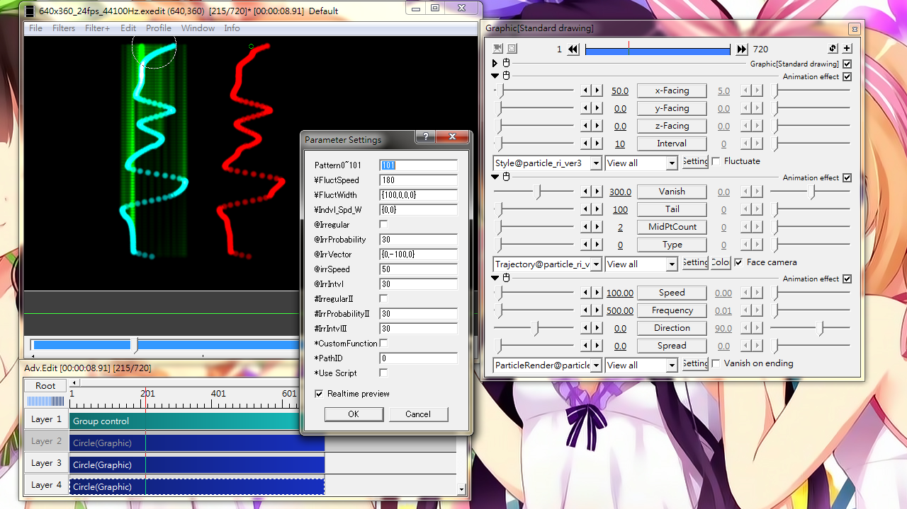
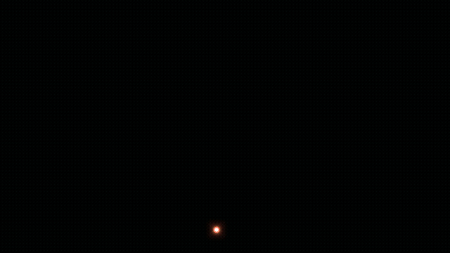
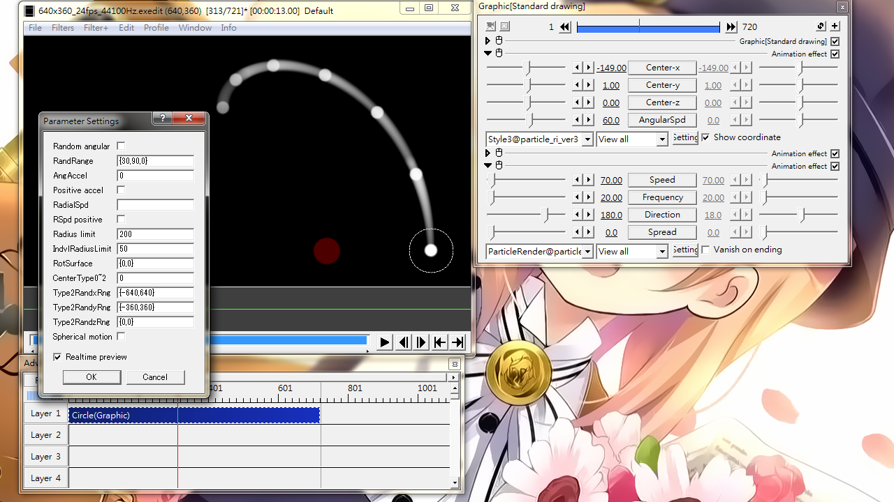

Fig13A: Style, effect of x-Facing and Pattern. The particle's base, as defined in ParticleRender@ is a simple output in a straight line moving downwards. When x-Facing of Style > 0, The emission origin is fluctuated within a range (see the green vertical tails on the left). The cyan particles has a pattern value of 101 while the red one has 0. The difference is subtle, but you should notice the change in emission origin is smoother at high pattern value. All seed value as -1.Fig13B: Style, effect of Fluctuate option. Yellow particles are moving in a straight line. The green one is almost the same as the yellow one except that the Fluctuate check box is ticked.
Style
Varies particle emission origin and change the movement pattern.
Sliders
x-Facing
Emission origin to be varied along the x-axis within this range.
y-facing
Emission origin to be varied along the y-axis within this range.
z-Facing
Emission origin to be varied along the z-axis within this range.
Interval
A smaller value will give more abrupt change.
This is a function of particle count and therefore appearance will change when Frequency altered.
Check box
Fluctuate: Make particles to drift along the output direction. See Fig13B for reference.
Setting dialog
Pattern0~101
Valid value from 0 to 101.
Define the smoothness of change for emission origin.
0 is more bumpy, 101 is the most smooth. See Fig13A for details.
\FluctSpeed
Set the speed of fluctuation when Fluctuate is enabled.
\FluctWidth
Magnitude of fluctuation when Fluctuate is enabled.
Input format: {x,y,z,ref}, where ref is 0 or 1.
ref defines whether the direction of fluctuation should be based on(perpendicular to) particle's movement direction. 0: independent from particle movement; 1: it depends
\Indvl_Spd_W
Set the variation range of fluctuation speed and amplitude.
Input format: {Speed,Amplitude}
When only a single value is given, same as {0,Amplitude}
@Irregular
Adds jumping movement to particles. A particle will diverge from the main path, then curve back to the main path. Looks like a group of dolphins skimming on sea surface.
@IrrProbability
The chance that a particle would have jumping movement.
@IrrVector
The allowable range and direction for jumping movement.
Input format: {x,y,z}
A single value will set the y-range only.
@IrrSpeed
The speed of particle when jumping event occurs.
@IrrIntvl
A time interval in frame count. For every interval, a particle is decided to have jumping movement or not according to @IrrProbability.
#IrregularII
Adds random bending to particle's path.
#IrrProbabilityII
The chance that a particle will have random bending.
#IrrIntvlII
A time interval. A particle is decided to have bending event or not for every interval lapsed.
*CustomFunction
Use a custom function to direct particle's behaviour.
*PathID
When the custom function is written in an external text file, attach the Path@ component and set this ID accordingly.
*Use Script
Enable this to define your function using the Script control effect.
About custom function
Sample:
function vector(t)
local r=300
local vx=r*math.sin(math.pi*t*2)
local vy=r*math.cos(math.pi*t*2)
local vz=0
return vx,vy,vz
end
where t is the time lapsed since particle emission in seconds. vx, vy and vz are velocity components.
Fig13C: Style2. In essence, it is an explosion simulation effect.

Fig13Anm: A video sample using Style2 to simulate firework. An object alias for this is already included in the package.
Style2
Allows changing particle direction in due course and allows braking. Firework effect can be achieved when using with Concurrent emission.
Sliders
ScatterTime
A delay time after which particle would change direction.
In milliseconds
No direction change when zero.
xy-Spread
A sector area on the xy-plane, within which a particle would change direction.
Particle will not scatter if zero.
z-Spread
When > 0, particle would bend in the z-axis direction.
BrakeTime
Milliseconds-to-stop for a particle. Even when a particle lost speed, effect of gravity and acceleration still apply.
Check box
Sync with concurrent emission: remove randomness among concurrent particles. Randomness will only be introduced when using with ScatterTime.
Setting dialog
Uniform spread
When particles break apart, particles break evenly in the sector defined by xy-Spread.
Sync with Rot
Rotation of all particles shall be in sync.
Sync filter0~1
Disable or enable randomness for Filter@
Input format:{[0/1],[0/1]...} (a max of 11 numbers)
Example: Filter@Blur→Filter@Color shift→Filter@Noise. To turn off randomness for Noise among concurrent particles, use {0,0,1,0,0,0,0,0,0,0,0}
Show track after
Show tails after scattering when using with Trajectory@
Scatter on reflection
Particle scatter on bouncing when using with Bounce@ or Bounce2@
ScatterSurface
The angle for plane of scattering.
{horizontal rotation, vertical rotation}
A single value will set vertical rotation only
{0,0} for a plane lying on horizontal
Use the letter r instead of number to randomize within 0 to 360
PostScatSpd
The speed of particle after scattering.
An absolute value will be the final speed, adding a % sign defines a randomization range.
Leave this empty for no change
PostScatAccel
Similar to PostScatSpd but for setting acceleration.
Filter1Scat0~2
Adjust the behaviour of VarVal1 in Filter@ and Filter(For monochrome) on scattering.
Assuming an object with: Filter@Blur→Filter@Color shift→Filter@Noise
entering {0,1,1,0,0,0,0,0,0,0,0} will link color shift with noise on scatter.
1: Change VarVal1 after scattering
2: Change of VarVal1 would finish on scattering.
Indvl_BrTime_EdTime
Defines randomization range for ScatterTime and BrakeTime.
Input format: {scatter,brake}
Unsync0~1
Override effect of Sync with concurrent emission for ScatterTime and BrakeTime.
Input format: {scatter sync off,brake sync off}, where value can be 0 or 1
0: keep sync; 1: break sync
StopScatLink0~2
For linking ScatterTime and BrakeTime.
0: do not link
1: brake after a defined time counting from scattering
2: brake first, then scatter after a defined time. Invalid when Scatter on reflection is enabled.
LinkTime
Duration in milliseconds for use with StopScatLink0~2.
Use < 1 to disable this.
IndvlLink
Add variation to LinkTime.

Fig13D: Style3. A fountain-like effect that bend particles along an elliptical path.
Style3
Send particles into circular or elliptical motion.
Sliders
Center-x
Center coordinate (X) of circular motion
This value can be animated over time
Center-y
Center coordinate (Y) of circular motion
This value can be animated over time
Center-z
Center coordinate (Y) of circular motion
This value can be animated over time
AngularSpd
Angular speed, in other words, degree per second.
Check box
Show coordinate: Display the focal point for circular motion as a red circle. See Fig13D for reference.
Setting dialog
Random angular
Randomize angular speed.
RandRange
Input format: {lower limit,upper limit,reverse}
When reverse is 1, there will be 50% chance that the rotation being reversed.
If only a single value is given, a +ve value will set the upper limit, a -ve value will set the lower limit, and all assume reverse=0.
AngAccel
Angular acceleration (change of angular speed over time).
-ve value to slow down, +ve value to speed up. Unaffected by the sign of angular speed.
Positive accel
Unchecked: After decelerating to zero speed, starts accelerating in the opposite direction.
Checked: When angular speed reached zero, stops circular motion.
RadialSpd
Particle speed with respect to center.
Input format: {lower limit,upper limit,reverse}
+ve value: move away from center; -ve: move towards center.
reverse=1: 50% chance reversing direction
RSpd positive
Unchecked: particle moves away from center after reaching it.
Checked: particle stops after reaching center
Radius limit
Set a limit on how far a particle can move away from center.
Undefined if left empty.
IndvlRadiusLimit
Varies the radius limit per each particle.
RotSurface
Sets the plane of circular motion and z-direction of spherical motion.
For circular motion: {x-tilt,y-tilt}
A single value is the same as {x-tilt,0}
Input r in place of number to randomize the parameter
For spherical motion: {z-angular speed,overall rotation}
A single value is the same as {z-angular speed,0}
Input r in place of number to randomize the parameter
Angles in degree
CenterType0~2
Sets how circle center is defined.
0: as defined by Center-x -y -z sliders
1: particle's emission origin will be the center. Requires radial speed to be set to obtain circular motion.
2: Randomize the center coordinate within the area defined by Type2RandxRng, Type2RandyRng and Type2RandzRng (see below).
Type2RandxRng
boundaries on x-axis when using CenterType=2
Format: {lower limit,upper limit}
Type2RandyRng
boundaries on y-axis when using CenterType=2
Format: {lower limit,upper limit}
Type2RandzRng
boundaries on z-axis when using CenterType=2
Format: {lower limit,upper limit}
Spherical motion
Send particles into spherical motion. See RotSurface above for details on tweaking this.
Fig13E: Style4. Using progress slider can control the animation property of the overall particle object. If Progress is not changing linearly, switching Differential to 1 will display a changing number when the Progress slider is changed.
Style4
Control the time and progress of emission.
Sliders
Progress
Display the state of particle object at this moment.
Value in seconds
If StTime (in ParticleRender@) is set, -ve value will take effect
The Enable Progress check box needs to be ticked in order for this to take effect
Differential
Display a kind of play speed factor
1: Playing at normal speed; 2: playing at double speed
Set zero to hide this status display
LastAdj
Define the meaning of final time.
0: object's total survival time.
1: The time as defined in Progress slider. No effect if Progress slider value is less than object's survival time.
Meaningless if Vanish option is not checked in ParticleRender@
Check box
Enable Progress: activate the Progress slider when checked. Otherwise the slider would have no effect.